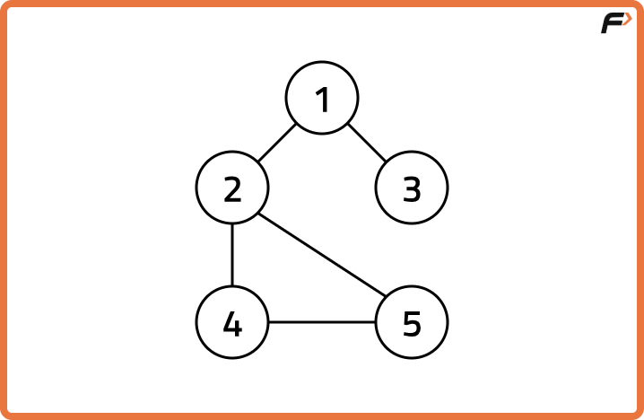
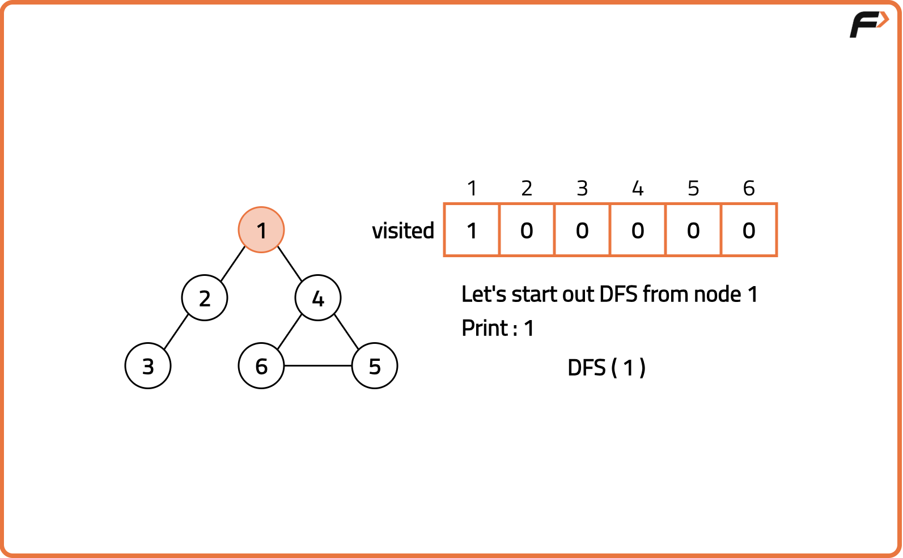
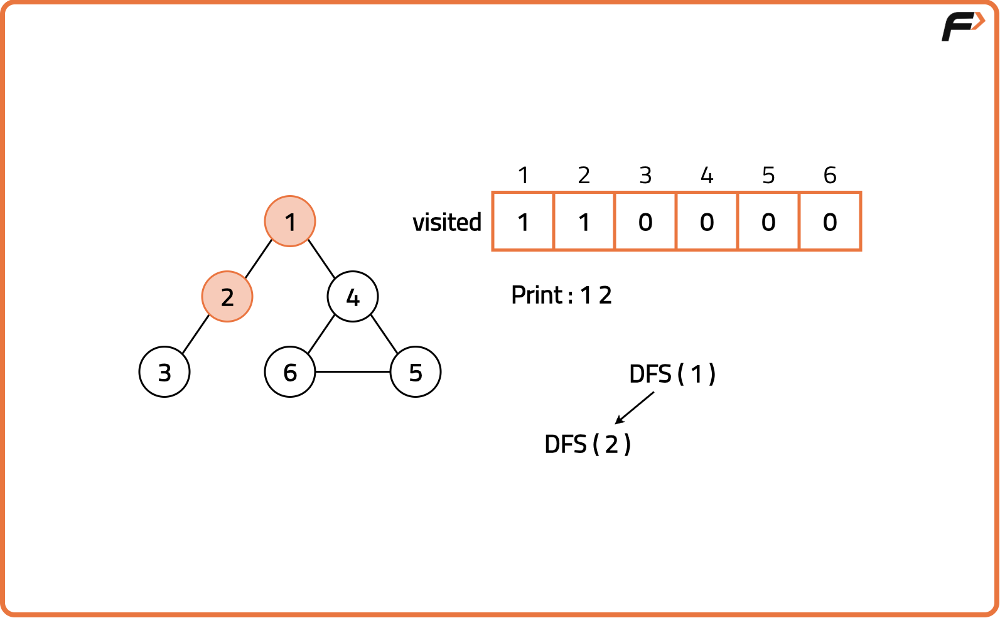
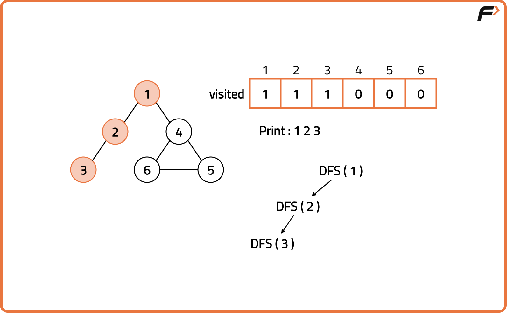
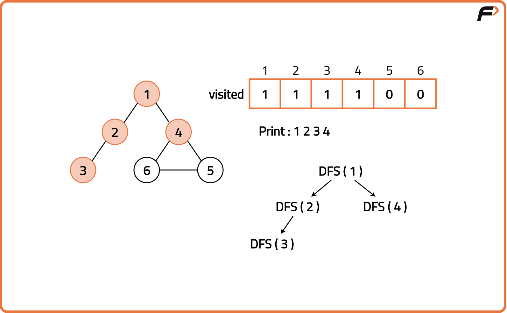
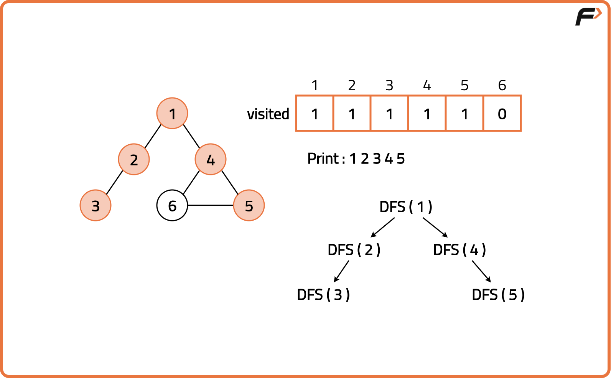
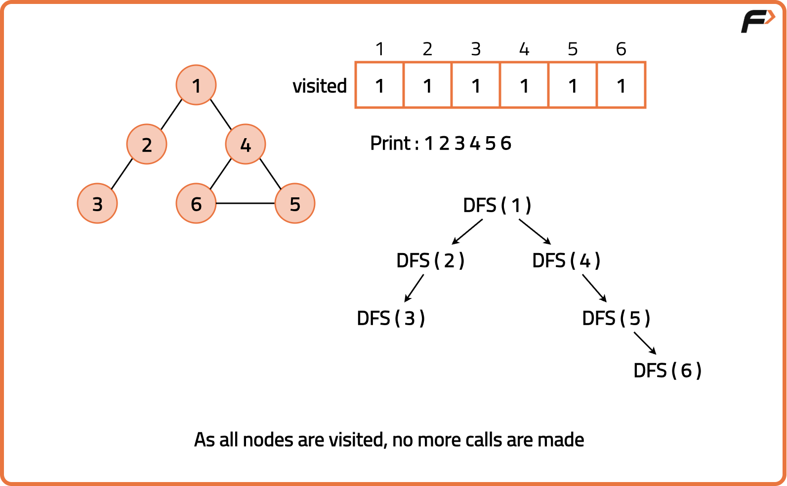

Depth First Search (DFS)
Problem Statement: Given an undirected graph, return a vector of all nodes by traversing the graph using depth-first search (DFS).
Examples
Input: V = 5, adj = [[2,3], [1,4,5], [1], [2,5], [4,5]]
Output: 1 2 4 5 3 Explanation: We traverse the entire graph using DFS technique. Input: V = 4, adj = [[2,3], [1,4], [1], [2]] Output: 1 2 4 3 Explanation: We traverse the entire graph using DFS technique.
Disclaimer: Here is the practice link to help you assess your knowledge better. It's highly recommend trying to solve it before looking at the solution.
Approach
Algorithm
DFS is a traversal technique which involves the idea of recursion and backtracking. DFS goes in-depth, i.e., traverses all nodes by going ahead, and when there are no further nodes to traverse in the current path, then it backtracks on the same path and traverses other unvisited nodes. Imagine navigating through a maze where you follow one path as deep as it goes, and when you can’t proceed further, you backtrack to the last junction and try a different route.
- Start from a chosen node and mark it as visited, storing it in the traversal list.
- Look at all the neighbors of the current node using the adjacency list.
- For each neighbor, if it is not visited, recursively apply DFS on that neighbor.
- This process continues, going deeper into one path until no unvisited nodes remain.
- Once a path is fully explored, backtrack to explore the remaining neighbors.
- Repeat until all nodes in the graph have been visited.






Code
#include <bits/stdc++.h>
using namespace std;
class Solution {
public:
// Function to perform DFS traversal
void dfs(int v, vector<int> adj[],
vector<int>& visited,
vector<int>& result) {
// Mark current node as visited
visited[v] = 1;
// Store node in result
result.push_back(v);
// Traverse all neighbours
for (int u : adj[v]) {
if (!visited[u]) {
dfs(u, adj, visited, result);
}
}
}
};
int main() {
// Number of vertices
int V = 5;
// Adjacency list
vector<int> adj[V];
adj[0] = {1, 2};
adj[1] = {0, 3};
adj[2] = {0, 4};
adj[3] = {1};
adj[4] = {2};
// Visited array
vector<int> visited(V, 0);
// Result vector
vector<int> result;
// Create object
Solution sol;
// Run DFS from node 0
sol.dfs(0, adj, visited, result);
// Print traversal
for (int x : result) cout << x << " ";
cout << endl;
return 0;
}
Complexity Analysis
Time Complexity: O(V+E), each vertex is visited once and every edge is checked once in the adjacency list.Space Complexity: O(V) , additional amount of space required for recursion stack.